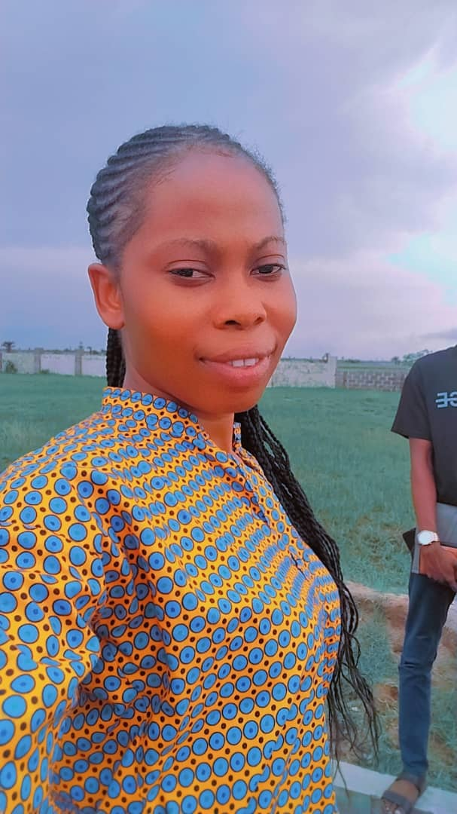

Objectives
A determined individual with a passion for excellence and an agent of positive change;
gifted in communication and business tactics and strategy/management; seeking a
challenging position in an organization where my core skills and acquired experiences
will continually produce valuable results and also attain self-actualization in the process.
Education
-
Higher National Diploma(HND)
- Federal Polytechnic, Ilaro
- Computer Engineering
- September 2017-2019
-
Ordinary National Diploma(OND)
- Federal Polytechnic, Ilaro
- Computer Engineering
- September 2014-2016
-
Secondary School(WASSEC)
- Beulah Model College
- 2007-2013
-
First Leaving School
- Beulah Montessori School
- 1997-2026
Work Experience
-
Computer Educator
- The Lagoon School
- January, 2022 - till date
- Cultivate a positive and engaging classroom atmosphere, encouraging active participation and facilitate a productive learning environment. Monitor and assess student’s academic progress, ensuring comprehensive and adapting teaching method. Mentored and provide guidance to students fostering an environment conducive to academic and personal growth. Educate and mentor students in computer science. Instruct and demonstrate the practical application of Microsoft suites ( Office, excel and power point). Introduce and facilitate learning in HTML and CSS guiding students in creating web
contents and understanding web design principle
-
Secetary
- Vineyard College
- September, 2020 - September, 2021
- Supports with organizing activities, ensuring a conducive living environment and addressing any issues that arise among students. Responsible for typing and formatting various documents, assignments, and administrative paper works. Ensure accuracy and efficiency in typing task. Assist teachers, administrators, and other staff members with preparing materials needed for the school’s operation
Skills
- Mirosoft office (word, Excel, PowerPoint, and Access)
- Graphic designing e.g Canva
- Networking(CCNA)
- Web developing
- Compia A+
Awards, Certification and Achievement
- Project Management Professional Certification
- Teachers Institute certification in Nigeria (TRCN)
- Microsoft Certified Eductaor
- National Youth Service Certification
- Social Emotional Intelligence (SEI)
Contact Me
Hobbies